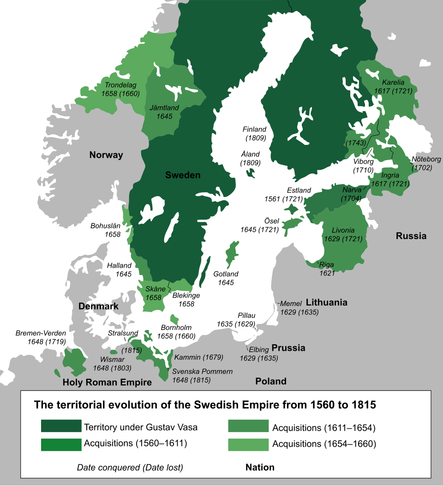
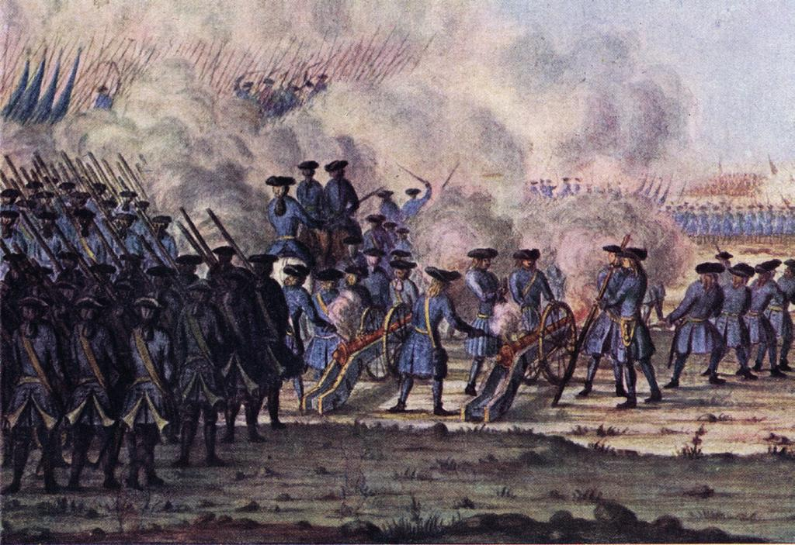
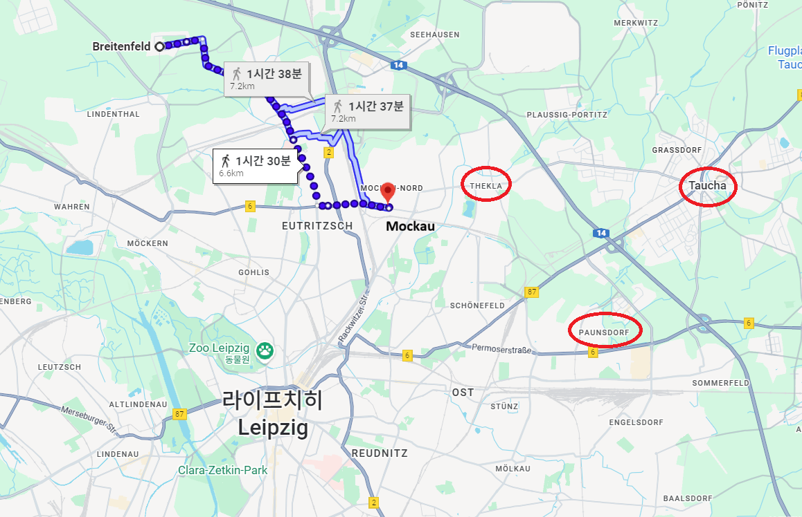
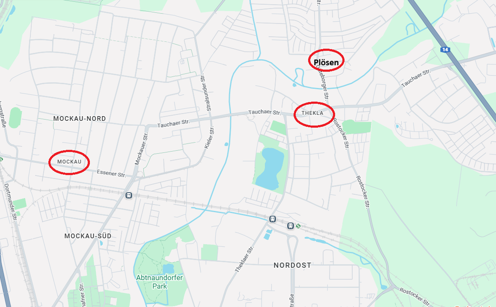
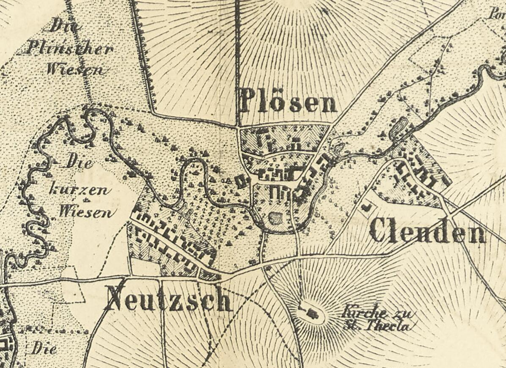
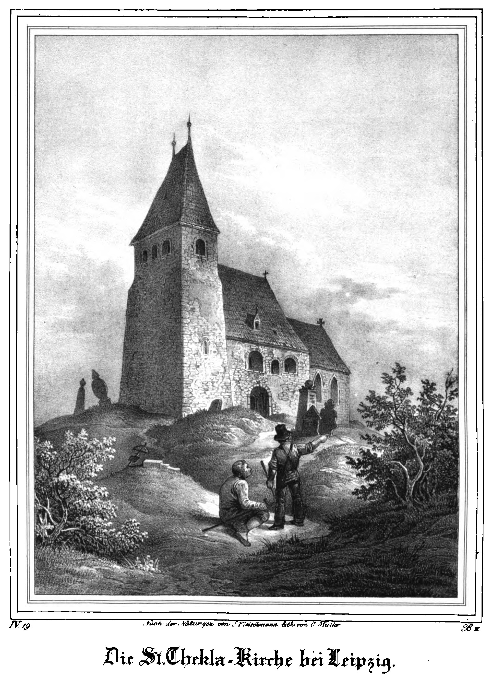
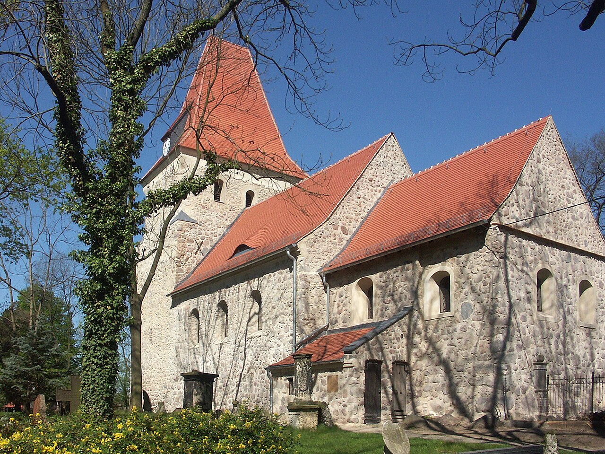

라이프치히 전투 (30) - 오직 스웨덴을 위하여
게시: 2025-12-29T06:30:39+09:00
부브나를 위기에서 구해준 신무기 이야기를 하려면, 먼저 18일 새벽 베르나도트의 상황부터 보셔야 합니다. 흔히 라이프치히에서의 베르나도트의 행동에 대해 '옛주인이자 군사적 천재인 나폴레옹과 직접 대면하는 것을 너무나 무서워하던 겁장이의 태도'라고 비난하는 경우가 많습니다만, 그건 다소 불공평한 평가라고 생각됩니다. 역사는 언제나 승자 또는 머릿수가 많은 쪽에 의해 쓰여지기 마련이고, 베르나토트에 대해서는 독일이나 영국이나 모두 자기 이익만 챙기는 얌체라고 평각하는데다, 프랑스에서는 배신자라고 낙인 찍고 있기 때문에, 우리가 보는 역사책에서는 모두 베르나도트에 대한 욕설만 가득한 것이 무리는 아닙니다. 하지만 나폴레옹을 이 라이프치히로 몰아넣기까지 베르나도트의 공헌이 얼마나 컸는지를 생각하면 그가 겁장이였다는 평가는 정말 잘못된 것입니다. 다만, 프로이센이나 영국이 베르나도트가 '이기적'이라고 평가한 것은 꽤 맞는 이야기 같습니다. 그는 스웨덴 왕세자로서 이 전쟁에 참여하던 처음부터 '이 전쟁에서 자신이 바라는 것은 노르웨이뿐'이라고 딱 잘라 정의했고, 오로지 그 목적을 위해 스웨덴을 승전국으로 올려놓기만 하면 될 뿐이므로 구태여 최전선에 스웨덴군을 투입하지 않았습니다. 나중에 노르웨이를 정복하기 위해서는 가뜩이나 머릿수가 적은 스웨덴군을 체면불구하고 무조건 보존해야 했기 때문입니다. 당시 베르나도트는 측근들에게는 공공연하게 '스웨덴이 승전국이기만 하면, 나와 스웨덴군이 그 전투 현장에 있었는지 여부는 중요치 않다, 실은 굳이 택하라고 하면 없는 쪽을 택하겠다'라고 말했다고 합니다.

(한때 바이킹 파워를 앞세워 유럽을 벌벌 떨게 하던 스웨덴이 어느 순간 갑자기 얌전한 신사가 된 것은 절대 아니었습니다. 스웨덴은 16세기 말부터 18세기 초까지 제국이라고 부를 정도의 국력과 영토를 자랑했지만, 결국 대북방전쟁에서 최종적으로 러시아에게 패배하면서 러시아에게 자리를 내주게 됩니다.)

(특히 17세기 말~18세기 초까지의 스웨덴군을 카롤리너(karoliner)라고 부르는데, 이는 스웨덴 제국의 말기인 카알 11세(Karl XI)의 이름에서 나온 것입니다. 이들은 대북방전쟁(1700~1721)에서 맹활약했으나, 결국 떠오르는 세력인 러시아에게 패배하는 것을 막을 수는 없었습니다. 이 그림은 대북방전쟁 중 벌어진 1712년 가데부슈(Gadebusch) 전투에서의 스웨덴군입니다. 여기서는 스웨덴군이 승리했지요.) 사실 그렇게 자국의 (부동산을 포함한) 경제적 이익을 위해 전쟁에 참여한 것은 영국이나 프로이센, 오스트리아 등 다른 국가들도 다 마찬가지였습니다. 비록 짜르 알렉산드르는 꼭 겉으로 뿐만 아니라 실제로도 유럽을 해방한다는 거룩한 종교적 경건함을 가지고 이 전쟁에 임했다고 전해지지만, 사실 그런 짜르를 움직여 나폴레옹과 싸우게 한 귀족들은 모두 자신의 경제적 이익을 챙기려는 욕심에서 그렇게 수많은 러시아 병사들의 목숨을 갈아넣은 것에 불과했습니다. 그렇게 스웨덴의 이익만 챙기던 베르나도트의 지휘권 밑으로 들어가게 된 랑쥬롱의 심정은 복잡했습니다. 그는 18일 이른 아침에 블뤼허로부터 갑자기 '이제 당신의 군단은 내가 아니라 베르나도트의 지휘를 받으시오'라는 통보를 받고 다소 당황했지만, 실은 꼭 싫지만은 않았습니다. 그는 자신이 프랑스 출신이라는 이유만으로 블뤼허와 그나이제나우로부터 미움을 받고 있다고 믿었고, 실제로도 그런 면이 있었기 때문이었습니다. 그렇다고 랑쥬롱과 같은 프랑스 출신이자만, 자신과는 달리 귀족 출신이 아니라 혁명군 출신인 베르나도트의 지휘를 받게 된 것에 대해 꼭 기뻐할 수만도 없었습니다. 아무튼 랑쥬롱은 새 상관으로부터 명령을 받기 위해 브라이텐펠트(Breitenfeld)에 있는 베르나도트의 사령부를 직접 찾아갔습니다. 그 첫인상은 과히 좋지 않았습니다. 아래는 그 장면에 대해 랑쥬롱이 남긴 기록입니다. "내가 베르나도트의 사령부에 도착했을 때, 나는 그가 장군들에게 프랑스어, 더 정확히는 (그의 고향인) 가스코뉴어로 작전 배치를 구술하고 있는 것을 보았다. 그는 스웨덴어를 한 마디도 못했기 때문이다. 그 지시들은 매우 훌륭해 보였으나 다소 지나치게 세부적이었다. 그는 대열 내 하급 장교들의 위치까지 일일이 지정했다. 이러한 과도한 세밀함은, 겉치레에 집착하는 것이 이제 모든 군주들의 공통된 고질병이 되었음을 보여 주었다." 직장 생활에서 다른 부서에 있다가 옆 부서로 막 전출간 사람이 새 부서장에게 '바깥 식구'로서 소소한 불이익을 받는 것은 흔한 일입니다. 랑쥬롱도 그런 불이익을 걱정했을 텐데, 정작 베르나도트가 랑쥬롱에 대해 내린 명령은 매우 합리적인 것이었습니다. 당장은 파르터강을 건너지 말고, 먼저 모카우(Mockau)에서 무력 시위만 하고 있으라는 것이었습니다. 그렇게 랑쥬롱의 러시아군이 펼쳐놓은 스크린 뒤에 숨어서 베르나도트의 북부 방면군이 동쪽으로 이동하여 파르터강 상류에서 강을 건널 것이니, 도하에 성공한 북부 방면군 병력들이 적과 교전을 벌이기 시작하여 적의 이목을 끌면 그 틈을 타서 랑쥬롱도 파르터강을 도하하라는 것이었습니다. 이건 랑쥬롱 군단의 피해를 최소화하면서 파르터강을 건너기 위한 최상의 시나리오였습니다.

(베르나도트의 사령부가 있던 브라이텐펠트는 모카우에서 불과 1시간 거리였습니다. 그러니까 베르나도트는 늑장을 부리면서도 착실하게 계속 라이프치히 쪽으로 이동하긴 했던 셈입니다. 브라이텐펠트에서 모카우까지의 거리만큼 다시 모카우에서 떨어진 곳에 부브나가 위기에 처한 곳인 파운스도르프가 있습니다.) 게다가 베르나도트는 랑쥬롱의 출신이 어디인지 전혀 개의치 않고, 무조건 러시아군을 아끼려는 것이 티가 났습니다. 가령 원래 병력 전개 상황을 보면 가장 동쪽에 위치하고 있던 빈칭게로더의 러시아군이 선봉으로서 파르터강 상류에서 도하하는 것이 합리적이었습니다. 그러나 베르나도트는 빈칭게로더에게는 대기 명령을 내리고 더 서쪽에 있던 뷜로의 프로이센 제3군단에게 그 선봉에 설 것을 명령했습니다. 선봉에 서는 것은 명예로운 일이기는 했지만 분명히 큰 희생을 겪을 수 밖에 없는 자리였습니다. 사람들은 연합군의 수장이라고 할 수 있는 짜르 알렉산드르에게 잘 보이기 위해 베르나도트가 러시아군의 희생을 최대한 줄이고 프로이센군을 대포밥으로 소모시키고 있다고 수군거렸습니다. 한편 대포밥 역할을 맡은 뷜로는 베르나도트 몰래 내통하고 있던 블뤼허에게 '자신이 파르터를 건너려고 할 때, 랑쥬롱에게도 기다리지 말고 빨리 파르터강을 도하하여 자신의 도하를 지원해달라고 명령해다오' 라고 부탁했습니다. 그런데 블뤼허는 프로이센편 러시아편을 갈라 프로이센군을 아끼려는 자상한 지휘관은 아니었습니다. 가령 바로 이틀 전, 뫼케른에서 마르몽과 싸울 때도 베르나도트처럼 가장 미운 부대를 앞세우지 않고 가장 신뢰하는 프로이센군을 갈아넣어 승리를 쟁취한 사람이 바로 블뤼허였습니다. 그는 뷜로 휘하 프로이센군의 희생을 줄여야 한다는 생각보다는 뷜로의 진격이 생각보다 느린 것에 분통이 터졌습니다. 당장 라이프치히 남쪽에서는 이미 포성이 격렬하게 들려오고 있었기 때문이었습니다. 블뤼허는 랑쥬롱이 공식적으로는 베르나도트의 지휘권 하에 있다는 사실을 깡그리 무시하고 랑쥬롱의 군단에게 당장 파르터를 건너라고 명령했습니다. 그런데, 정작 그 명령을 받아야 할 랑쥬롱은 아직 브라이텐펠트의 베르나도트 사령부에서 돌아오지도 않은 상황이었습니다. 파르터 강변 모카우에서 도하 준비를 하고 있던 랑쥬롱의 사단장들, 즉 루체비치(Rudzevich)와 엠마누엘(Emmanuel)은 블뤼허에게 등이 떠밀려 오전 9시경부터 도하를 시도했습니다. 그러나 당연히 도하는 쉽지 않았습니다. 비로 인해 강물이 꽤 불어난데다, 원래부터 습지와 가시덤불, 숲 등으로 인해 도하에 쉽지 않은 지형이었는데, 이틀전 뫼케른에서 치열한 전투를 치렀던 마르몽의 제6군단 소속 병력이 보병과 기병은 물론, 장크트 테클라(St. Thekla) 교회 언덕에 강력한 포병대를 배치해두고 있었기 때문이었습니다. 이들은 러시아군이 강을 건너려하자 즉각 대포알을 날리기 시작했습니다. 이런 상황에서 발 딛기도 어려운 급류 속으로 무작정 병력을 더 쏟아붓는 것은 자살행위였습니다. 러시아군은 장크트 테클라 언덕의 적 포병대에 대응하기 위해 18문씩의 포병대 2개 부대를 파르터강 우안의 노이취(Neutzsch) 및 플뢰젠(Plösen) 근처의 두 군데 언덕에 배치하여 대포병전을 전개했습니다.

(파르터강은 지도의 오른쪽 위에서 왼쪽 아래로 흐르는 가느다란 하늘색 선입니다. 모카우와 테클라, 그리고 플뢰젠의 지명이 보입니다.)

(이 지도는 1863년 경의 지도에는 테클라, 플뢰젠, 그리고 노이취 지명이 선명하게 표시되어 있고 플뢰젠 마을 저 위쪽에 언덕이 표시된 것이 보입니다. 노이취(Neutzsch)라는 지명은 당시 전투 기록에 나온 것과는 달리 파르터강의 우안이 아니라 좌안에 위치한 것으로 나옵니다만, 당시 전투 기록을 남긴 사람들도 그 고장 토박이가 아니므로 그냥 파르터강 우안의 나지막한 언덕의 이름을 아무렇게나 적었을 수도 있습니다.)

(1839년 경 그려진 장크트 테클라 교회의 모습입니다. 원래 10세기 경에 지어진 이 교회 이름은 Hohen Thekla 교회인데, 30년 전쟁을 거치면서 누군가 St. Thekla 교회라고 잘못 기록하는 바람에 장크트 테클라 교회라고도 계속 불리고 있답니다.)

(놀랍게도 장크트 테클라 교회는 지금도 거의 원형 그대로의 모습으로 남아 있습니다. 이 교회의 벽은 가장 두꺼운 곳이 2미터에 이를 정도로 튼튼하기 때문입니다. 이 교회는 처음에는 프랑스군이, 나중에는 베르나도트가 관측소로 사용했고, 이 교회 벽에는 지금도 라이프치히 전투 당시의 대포알이 3발 박혀 있다고 합니다.) 프랑스군이 러시아 원정 실패 이후 질적으로 크게 저하되었다고는 하지만, 포병대는 여전히 발군의 실력을 자랑하고 있었습니다. 특히나 마르몽의 제6군단은 나폴레옹이 애지중지하던 정예군단이었습니다. 미리 테클라 언덕에 방열한 프랑스군 포병대를 상대로, 러시아군 포병대가 승리를 거둘 수 있었을까요? 이 포병전은 무려 1시간이나 이어졌는데, 10시경부터 놀랍게도 프랑스 포병대가 견디지 못하고 물러서는 것이 목격되었습니다. 그런데 정말 러시아 포병대가 포술 대결에서 승리한 것이었을까요? Source : The Life of Napoleon Bonaparte, by William Milligan Sloane Napoleon and the Struggle for Germany, by Leggiere, Michael V With Napoleon's Guns by Colonel Jean-Nicolas-Auguste Noël https://www.britannica.com/event/Napoleonic-Wars/Dispositions-for-the-autumn-campaign http://www.historyofwar.org/articles/campaign_leipzig.html https://warhistory.org/@msw/article/leipzig-battle-of-the-nations https://www.encyclopedia.com/history/encyclopedias-almanacs-transcripts-and-maps/leipzig-battle-0 https://warfarehistorynetwork.com/article/death-knell-for-napoleons-empire/ https://en.wikipedia.org/wiki/Caroleans https://en.wikipedia.org/wiki/Swedish_Empire https://de.wikipedia.org/wiki/Kirche_Hohen_Thekla https://de.wikipedia.org/wiki/Thekla_(Leipzig)